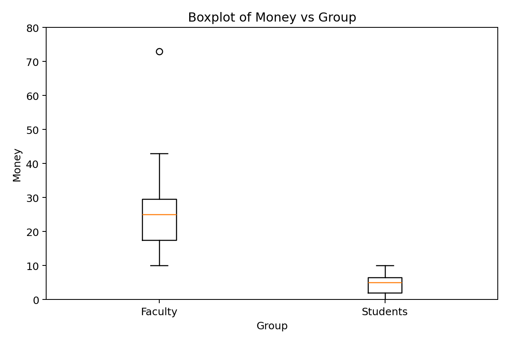
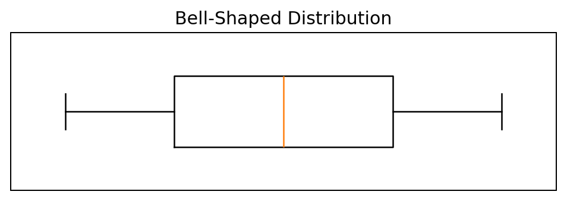
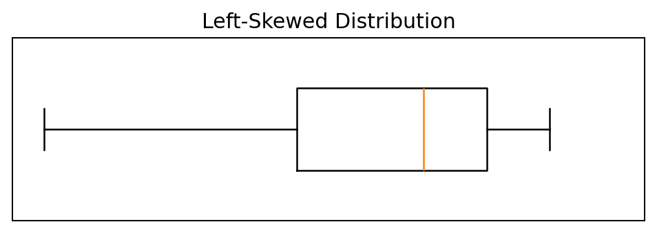
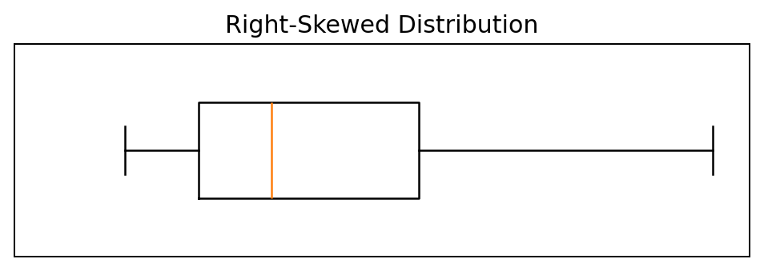
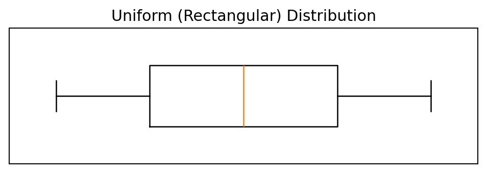
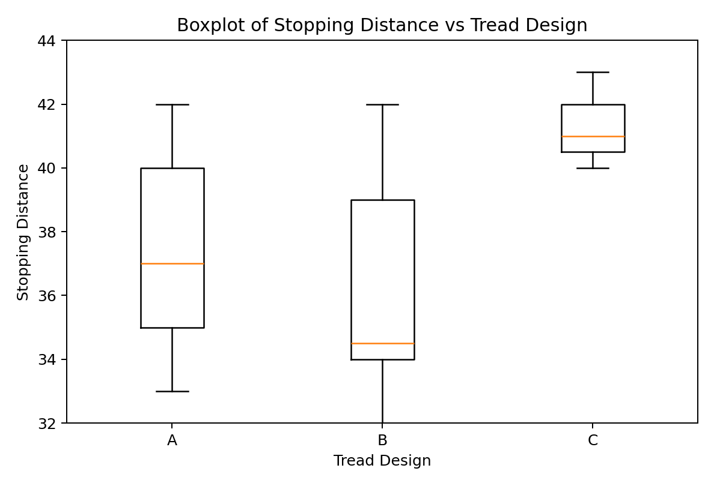

STA296U — Section 3
Variability and Relative Standing
In This Section
A measure of dispersion is a measure of the spread of the data points or we can also say a measure of how much variability there is in the data set. I will start with a scenario to illustrate the importance of a measure of dispersion descriptively.
Calculate the mean, median, and mode for distribution #1 and then distribution #2. Compare these two distributions based on the measures of center. What you should conclude is that all measures of center for the two distributions are the same. The solutions for the measures of center follow:
If you compare just the measures of center it appears the two distributions are the same, but are they? They are not the same. Distribution #2 has more variability than distribution #1. This can be reported with a measure of dispersion. That is why the most common way to numerically describe a data set is with a measure of center and a measure of dispersion.
Range = High - Low
Example
The years of experience for five faculty members will be utilized to illustrate the calculation of the measures of dispersion. The data are as follows: 1, 30, 22, 10, 5 Calculate the range.
Answer
Sample Range = High - Low = 30 - 1 = 29
Important characteristics of the range are:
- easy to compute
- totally sensitive to extreme scores
The range is not a good measure of variability in most cases. It has the same issue as the midrange, it is based only on the high and low value in a data set.
Conceptual formula: s² = Σ(x - x̄)² / (n - 1)
Computational formula: s² = [nΣx² - (Σx)²] / [n(n - 1)]
where s² is the sample variance, Σ is the sum, x is the data values, x̄ is the sample mean, and n is the sample size.
Notice there are two ways to calculate the variance, s². The first way, s² = Σ(x - x̄)²/(n - 1), is the conceptual formula and you can see that this equation comes straight from the definition. The numerator of this formula, ∑(x − x̄)², is called the sum of squared x and is often abbreviated by SSX. The quantity SSX along with the general idea of sum of squares is very common in statistics and you will see this quantity in multiple formulas this semester. The second equation, s² = [nΣx² - (Σx)²]/[n(n - 1)], is the algebraic equivalent of the first and is the one I suggest you use when calculating variance. This equation is much easier to deal with when doing the math by hand. Below is the algebraic steps required to prove these formulas are equivalent. This is your first opportunity to see how the summation properties are used when data is not provided. Make sure you understand the algebraic manipulation.
SSX Manipulation and Variance Formula
SSX = Σ(x - x̄)²
= Σ(x² - 2xx̄ + x̄²)
= Σx² - 2x̄Σx + Σx̄²
= Σx² - 2x̄Σx + nx̄²
= Σx² - (Σx)²/n
s² = SSX/(n - 1)
= [Σx² - (Σx)²/n]/(n - 1)
= [nΣx² - (Σx)²]/[n(n - 1)]
A common question with variance is why do we calculate the average squared distance and not the average distance directly? The answer to this question comes from the definition of the mean. Think about Σ(x - x̄). Notice all I did was take the squared off the numerator of the conceptual formula for the variance. If you do this sum it will always be equal to zero. The reason is because some of the x values will be above the mean and some below the mean because the mean is the center. When you subtract from a x value bigger than the mean you will get a positive and when you subtract from a x value smaller than the mean you will get a negative. When these are all added together, since the mean is the center, the positives and negatives will balance out and you will get a sum of zero. This can also be shown algebraically.
Example
Prove that Σ(x - x̄) is equal to 0 (show algebraic steps).
Answer
Σ(x - x̄) = Σx - Σx̄ = Σx - nx̄ = Σx - n(Σx/n) = Σx - Σx = 0
Important characteristics of the variance are:
- all the data points are directly involved in the calculation
- variance is in squared units which makes it hard to interpret
- can never be negative since it is a squared value
- larger values suggest more variability
Example
Back to the years of experience of faculty data: 1, 30, 22, 10, 5 Calculate the variance.
Answer
To use the computational formula for variance, you first need to calculate ∑x and ∑x². I recommend you create two columns in order to get these quantities as given below.
s² = [5(1510) - (68)²] / [5(4)] = (7550 - 4624) / 20 = 2926 / 20 = 146.3
s = √s²
When we calculate variance which is the average squared distance the data values are from the mean, we really would like to get rid of the squared because the outcome is not in the same units as the original data. So how do we get rid of a squared? We simply take the square root. Therefore, the square root of the variance gives us standard deviation.
Example
Data: 1, 30, 22, 10, 5 Calculate the standard deviation.
Answer
s = √146.3 = 12.095
Important characteristics of the standard deviation are:
- standard deviation uses the same units as the data
- standard deviation is the most common measure of dispersion
Standard Deviation as a Unit of Measure
Standard deviation is not only our most common measure of variability, it is also regularly utilized as a unit of measure. Here we will look at how this is done descriptively.
z = (x - x̄) / s
where z is the z-score, x is a data value, x̄ is the sample mean, and s is the standard deviation.
Example
Suppose a group of test scores have x̄ = 79 and s = 9 a. For a test score of 88, find the z-score. b. What does the z-score for 88 mean? c. For a test score of 63, find the z-score. d. What does the z-score for 63 mean?
Answers
a. z = (88 - 79)/9 = 9/9 = 1 b. The score of 88 is 1 standard deviation above the mean. c. z = (63 - 79)/9 = -16/9 = -1.778 d. The score of 63 is 1.778 standard deviations below the mean.
- Approximately 68% of the data fall within 1 standard deviation of the mean (x̄ - s, x̄ + s)
- Approximately 95% of the data fall within 2 standard deviations of the mean (x̄ - 2s, x̄ + 2s)
- Approximately 99.7% of the data fall within 3 standard deviations of the mean (x̄ - 3s, x̄ + 3s)
Example
Suppose that the amount of liquid in “12 oz.” Pepsi cans is a mound shaped distribution with x̄ = 12 oz. and s = 0.1 oz. a. About 68% of the data will fall within what interval? b. About 95% of the data will fall within what interval? c. About 99.7% of the data will fall within what interval?
Answers
a. (x̄ - s, x̄ + s) = (12 - 0.1, 12 + 0.1) = (11.9, 12.1) b. (x̄ - 2s, x̄ + 2s) = (12 - 2(0.1), 12 + 2(0.1)) = (11.8, 12.2) c. (x̄ - 3s, x̄ + 3s) = (12 - 3(0.1), 12 + 3(0.1)) = (11.7, 12.3)
Numerical Measures of Position
There are many measures of position (also known as rank statistics) that can be calculated. We will focus on the quartiles. Let me first mention the idea of a percentile which is also a measure of position. A common place that you will see percentiles are when school children take standardized tests. The students will get scores as percentiles. For example, suppose John scores in the 95th percentile in math. Do you know what this means? Technically, it means that John scored better than 95% of people who took the test. Does this say how well he did on the test? Not really, he could have done poorly as long as 95% of his peers did worse. This is a measure of position because it tells where his score is relative to everyone else.
Procedure for calculating Q1, Q2, and Q3:
- Order the data from smallest to largest
- Find x̃. This is Q2
- Q1 is the median of the lower half of the data; that is, it is the median of the data falling below Q2 (not including Q2)
- Q3 is the median of the upper half of the data (same as above)
Example
Find the quartiles for the following data sets a. Data set #1: 1, 2, 3, 4, 5, 6 b. Data set #2: 1, 2, 3, 4, 5, 6, 7 c. Data set #3: 1, 2, 3, 4, 5, 6, 7, 8 d. Data set #4: 1, 2, 3, 4, 5, 6, 7, 8, 9
Answers
a. Q1 = 2, Q2 = 3.5, Q3 = 5 b. Q1 = 2, Q2 = 4, Q3 = 6 c. Q1 = 2.5, Q2 = 4.5, Q3 = 6.5 d. Q1 = 2.5, Q2 = 5, Q3 = 7.5
IQR = Q3 - Q1
Important characteristics of IQR are:
- better than a typical range because it is not based on extreme values
- still not as good as the standard deviation in most cases
Below in the form of a stem-and-leaf plot is data that I obtained when I was in graduate school. There was a group of faculty and graduate students in a meeting and everyone was asked how much money they had in their pockets. The data along with the five number summary and IQR for each group follows. Make sure you understand how to get the five number summary and IQR from the data. Also, it is important to note that the value of 73 in the faculty data would be considered extreme.
Box and Whisker Plot
Box and Whisker Plots, also commonly referred to as Boxplots, are graphs based on the five number summary. They are used for bivariate data when one variable is qualitative and one is quantitative. The example we will start with uses the data presented above. We have two variables one being qualitative (student/faculty) and the other being quantitative (money). The boxplot for this data is below.
In order to understand how the box and whisker plot is created and to better understand the interpretation of the graph it is important to go over the procedure for creating a box and whisker plot. You will not have to create the graph by hand. We will let software actually create the graph, but you do need to understand how to interpret the information presented in the graph.
Procedure for creating a box and whisker plot:
- Draw a scale to include the lowest and highest data value (this will be the y-axis)
- To the right of the scale draw a box from Q1 to Q3
- Include a solid line through the box at the median level
- If there are any extreme values identify them with an asterisk or dot
- Draw solid lines, called whiskers, from Q1 to the lowest value and from Q3 to the highest value (if there are extremes, go to the next lowest or highest value)
If you compare the box and whisker plot to the five number summary in the previous example, you should see how it was created. Just look at the faculty category. Start with the box, the bottom lines up with Q1 = 15 and the top lines up with Q3 = 31. The box represents the middle 50% of the data (IQR). The line that goes through the box lines up with Q2 = 25. This line represents the median. Finally, look at the whiskers which are the lines that extend from the box. If you look at the lower whisker it goes from the bottom of the box to the low value in the data set, Low = 10. The top whisker is a little different, because the High = 73 was identified as an extreme value. Therefore, this value is identified by an asterisk and the whisker goes to the next highest value which you can see from the data is 43.
There are three kinds of questions you should be able to answer from a box-and-whisker plot. You should be able to compare the groups based on a typical value, compare the groups based on variability, and identify the shape of the distribution for each group.
Based on the box and whisker plot in the previous example which group tended to have the most money in their pockets, students or faculty? Faculty, we can tell this because of the positioning of the box and the median on the y-axis. The faculty box and median is positioned higher.
Based on the box and whisker plot in the previous example which group tended to have more consistent values (less variability)? Students, we can tell this because of the size of the box and the length of the whiskers. The student box is smaller and has shorter whiskers.
Identifying Shapes from Boxplots
The above graphs are smooth curves, but the shape is determined the same way as with a histogram. This is a common way to represent populations and we will look at these graphs later in the course. What I want you to be able to identify from a box-and-whisker plot is if the graph is symmetric or skewed. If it is skewed, you should be able to identify the direction, either right or left. In the above graphs there are two that are symmetric. The Bell-Shaped Distribution and the Uniform (Rectangular) Distribution are both symmetric. The most telling sign of shape based on a box and whisker plot is where the median is in the box. Notice that in a symmetric distribution, the median is in the center of the box. The secondary sign of symmetry is the whiskers being the same length. If a distribution is skewed, then the median will not be in the center. The median being to the right indicates a left skewed distribution. This is because the data to the left is more spread out than the data to the right indicating a longer tail to the left. The secondary characteristic is the whisker to the left is longer than the whisker to the right. This also indicates a longer tail to the left. The right skewed distribution is just the opposite. In order to determine the shape when looking at the box and whisker plots I will give you, most people turn them 90 degrees at least mentally so they look like the ones above. When doing this make sure you turn them clockwise. This will ensure that the y-axis is increasing from left to right.
Now let us look at another situation. How does tread design affect an automobiles stopping distance? Qualitative variable: Tread Design (A, B, or C) Quantitative variable: Stopping Distance
You should be able to answer the following questions.
If you were to select a tread design just based on stopping distance, which one is the best choice? Tread design B is the best choice because we want a quick stopping distance (low numbers) and the box for B is lower. Also, the median is much lower indicating that the lower 50% of stopping distances for tread design B is much better than that for the other two tread designs.
Which tread design produces the most consistent stopping distances (least variability)? Tread design C has the least variability. We can tell this because the box is smaller than that for the other two designs. Also, the whiskers are short. Notice in this case the stopping distances are consistently bad. We would like to have a choice that is consistently good, but in this situation that is not an option.
What is the shape of the distribution for each tread design? All the distributions are right skewed. This is because for each plot, the median is left of center. For each tread design the secondary characteristic of a longer whisker to the right is also satisfied. The important thing with shape is these characteristics. Notice the plots look different but they are all right skewed because they all satisfy the criteria.
Recreated Section 3 Graphics





